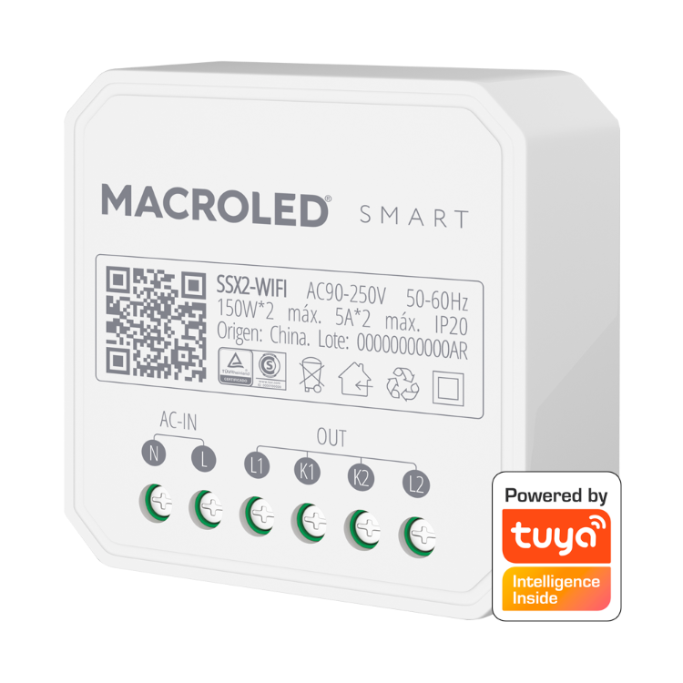

Switches

Los switches son los elementos que mas versatilidad nos van a proporsionar en el sistema de nuestro hogar. Pudiendo controlar un sinfín de elementos del hogar, desde luces, reflectores, hasta bombas, persianas electricas, lavarropas,etc. Algunos tienen tambien la capacidad de medir diferentes parametros.
Las potencias que pueden controlar van desde los 150W hasta los 3500W. Desde 1 hasta 4 canales.
Lo positivo
- Podemos transformar un interruptar comun de casa en smart
- Nos proporcionan la mejor versatilidad
- Podemos medir los parametros del hogar y disparar diferentes escenas con ellos
- Nos proporsionan protecciones contra sobre/sub voltaje y sobre/sub corriente
Lo negativo
- Dependiendo el modelo el precio es un poco mas elevado que una llave smart
- Debe ser instalado por un electricista profesional para asegurar su correcta instalacion y funcionamiento
| Caracteristicas | SSX2 | Basic R2 | Basic R2RF | Mini R2 | Dual R3 | TH16 | POW R2 | 4CH PRO R3 |
|---|---|---|---|---|---|---|---|---|
| Marca | Macroled | Sonoff | ||||||
| Tension | 90-220VCA | 100-240VCA | 90-220VAC 5-24VDC | |||||
| Frecuencia | 50-60Hz | |||||||
| Corriente máxima | 5A | 10A | 15A | 40A | ||||
| Potencia máxima | 300W | 2200W | 3500W | 8800W | ||||
| Cantidad de canales | 2 | 1 | 2 | 1 | 4 | |||
| Corriente máx. por CH | 2.5A | 10A | 7.5A | 15A | 10A | |||
| Potencia máx. por CH | 150W | 2200W | 1750W | 3500W | 8800W | |||
| Interruptor ext | No | Si | Si (dos) | Si | No | |||
| Interruptor ext. combinacion | No | Si | Si (dos) | Si | No | |||
| Pulsador ext. | No | Si (puede actuar como uno) | Si (dos) | No | ||||
| Control de motores | No | Si | No | Si | ||||
| Corriente máx. motor | N/A | 1A | N/A | 10A por canal.(pico arranque incluido0 | ||||
| Puede medir parametros | No | Si (V/I/P) | Si (tem/hum) | Si (V/I/P) | No | |||
| Sensores compatibles | N/A | Sensor interno | Si702 / AM2301 / DS18B20 / DHT11/MS01 | Sensor interno | N/A | |||
| Control por RF | No | Si | No | Si | ||||
| Compatibilidad | Ecosistema tuya IoT | e-WLink +IFTTT | ||||||
| Conexion | 2.4GHz requerida | IEEE 802.11 b/g/n 2.4GHz | IEEE 802.11 b/g/n 2.4GHz + 433.92MHz | IEEE 802.11 b/g/n 2.4GHz | IEEE 802.11 b/g/n 2.4GHz + 433.92MHz | |||
| Temperatura de trabajo | -20/45º | -10/40º | ||||||
| Garantia | 2 años | 3meses | ||||||
| Funciones | Progrmacion on/of, mes, dia, hora, cuentta regresiva interlock, control por voz, el segundo canal solo se activa desde las apps macroled, tuya o smart life, no es reconocido por google home, google asistant ni alexa. | Progrmacion on/off, mes, dia, hora, hasta 8 temporizadores, cuenta regresiva, bucle, IFTTT, google, alexa | Basic + control motor tubular persianas, medicion y comando o solo medicion con rele enclavado y cloud data saved | Basic + temp/hum | Basic + potencia | Basic + control 4 rele NA/NC uso a discrecion, modo on/off, inching e interlock | ||
| Inching | se comporta como un pulsador, pudiendo controlar el tiempo de pulso | |||||||
| Interlock | Solo permite un canal activado por vez, al momento de encender uno el otro u otros canales se apagan autmaticamente. Generalmente para el control de motores | |||||||